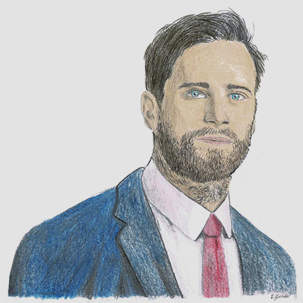

Willkommen auf meiner kleinen Website!
📸 Mein Portfolio: Hier sehen sie ein paar ausgewählte Werke meiner Arbeit
▸ Cinematic-Compositings
Die folgenden Bilder sind Cinematic Compositings, die ich in Adobe Photoshop erstellt habe.
Wenn sie mehr davon sehen möchten, schauen sie gerne bei meinem für Digital Art vorbei.


▸ Fotografien
Die folgenden Bilder sind (teils bearbeitete) Fotografien von mir.
Wenn sie mehr davon sehen möchten, schauen sie gerne bei meinem vorbei.


▸ Zeichnungen
Die folgenden Zeichnungen wurden von mir erstellt.
Wenn sie mehr davon sehen möchten, schauen sie gerne in den Highlights meines vorbei.



▸ Ihnen gefällt was Sie sehen? Sie haben Wünsche oder Anregungen? Kontaktieren sie mich gerne!